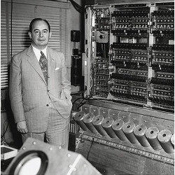

Alan Turing : age 16
Alan Turing at a marathon during his younger years
No, I'm not interested in developing a powerful brain.
All I'm after is just a mediocre brain, something like the
President of the American Telephone and Telegraph Company.
-Alan Turing
-Alan Turing
I believe that at the end of the century the
use of words and general educated opinion will
have altered so much that one will be able to
speak of machines thinking without expecting to
be contradicted.
-Alan Turing
-Alan Turing
